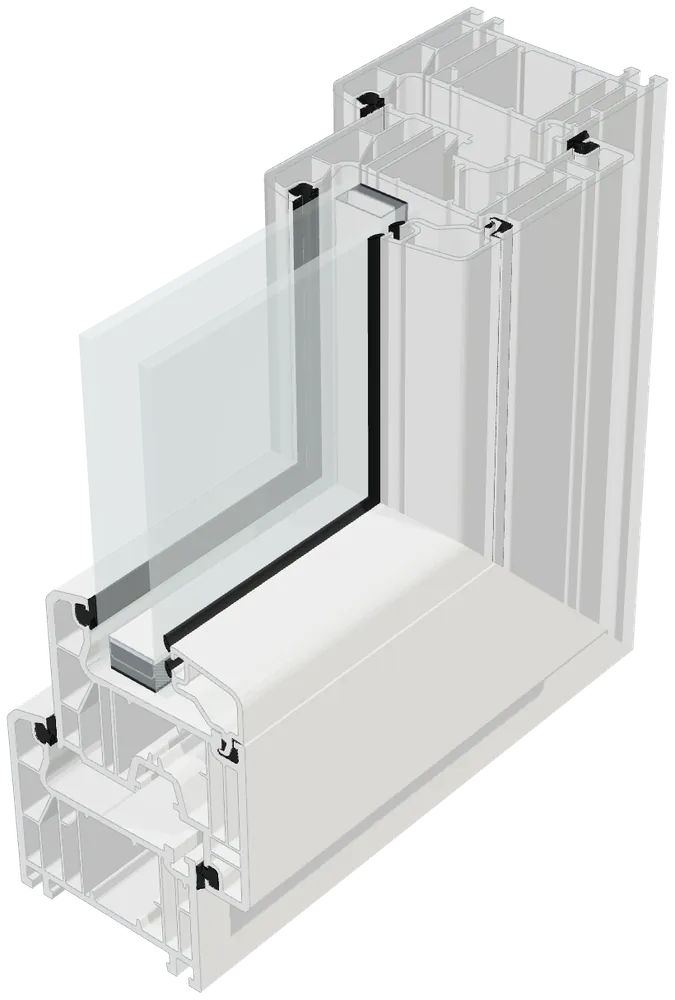
S70 Luxe
Serilerin en çok odacıklı olanı: kasada ve kanatta altı odacık.
70 mm6 odacık
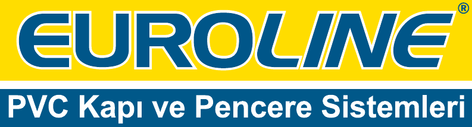
Kataloğu indirinYAŞAM BOYU KALİTE
Euroline PVC kapı ve pencere sistemleri. Eskişehir'deki kendi fabrikamızda, 2001'den beri üretiyoruz.
Serileri inceleyinYAŞAM BOYU KALİTE
Dışarısı hep bu kadar yakındı.
İyi bir pencere sınırı belirler: ışığı geçirir, soğuğu ve gürültüyü kapıda bırakır.
Profili inceleyinKışın ısı içeride, yazın gürültü dışarıda kalır. Işık ise olduğu gibi geçer. Bir pencerenin bütün işi bu kadar sade, bu kadar zor.
Euroline çiziminden kesit: kasa, kanat, cam çıtası ve contalar. Isı her odacıkta biraz daha yavaşlar.

Serilerin en çok odacıklı olanı: kasada ve kanatta altı odacık.
70 mm6 odacık
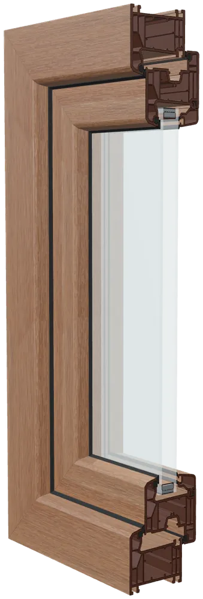
Luxe ile aynı genişlikte, beş odacıklı kasa ve kanat.
70 mm5 odacık
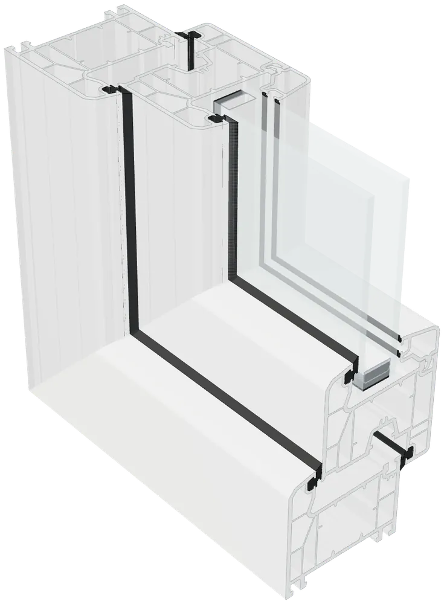
Dört odacıklı kasa ve kanatla 70 mm sistem.
70 mm4 odacık
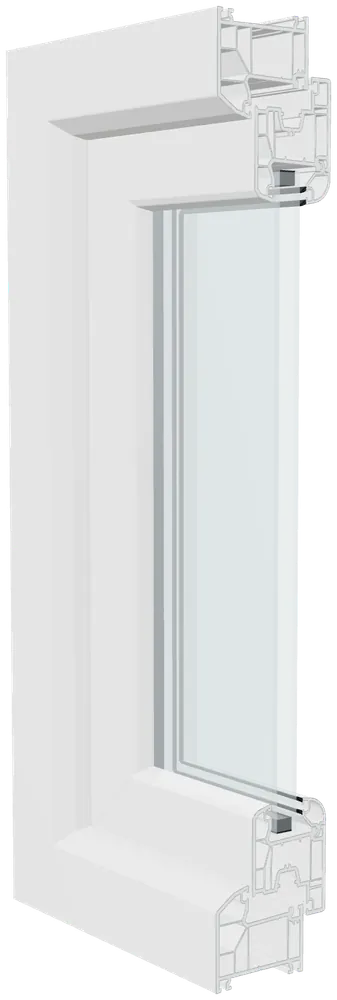
70 mm kasa, 60 mm kanat. Kasası 60'lık kanat için ayrıca tasarlandı; dört odacık.
70 mm4 odacık
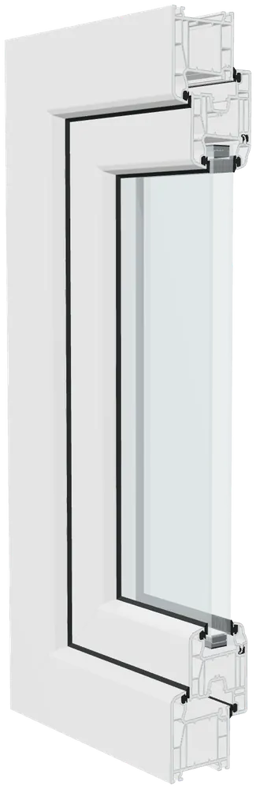
60 mm profil. Kasada ve kanatta dörder odacık.
60 mm4 odacık
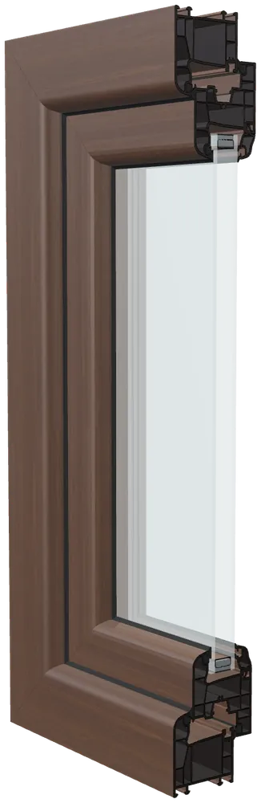
60 mm profil. Dört odacıklı kasa ve kanat, folyo seçenekleriyle.
60 mm4 odacık
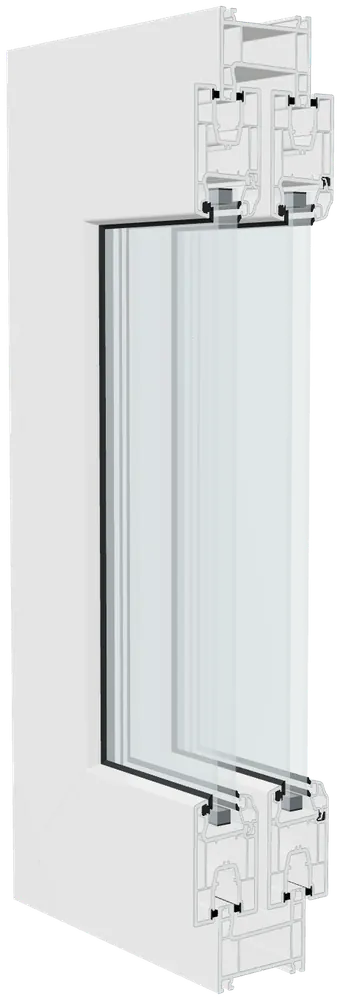
Sürme sistem: tek ve çift raylı kasa seçeneği.
70 mm
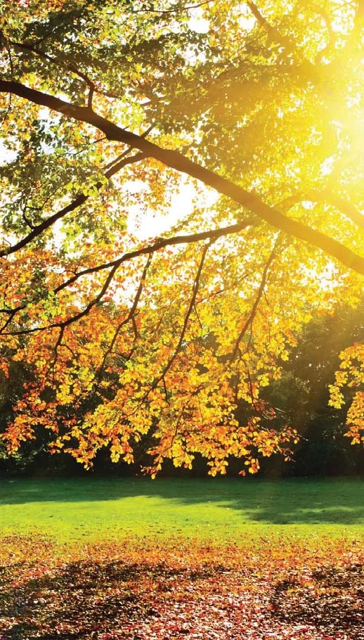
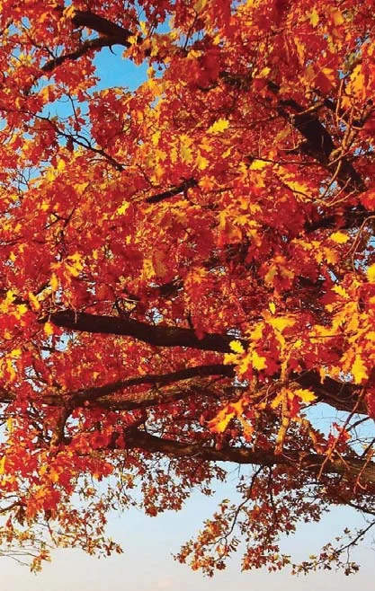
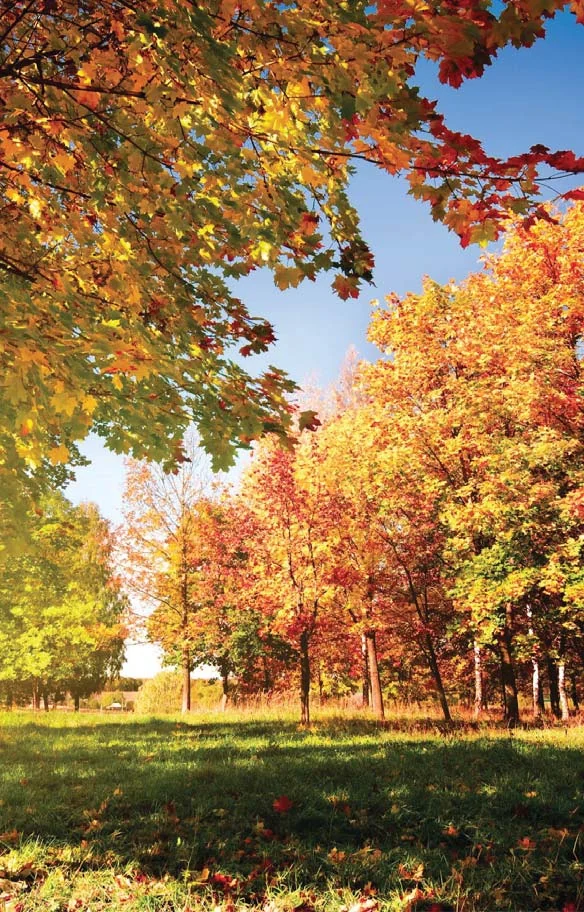
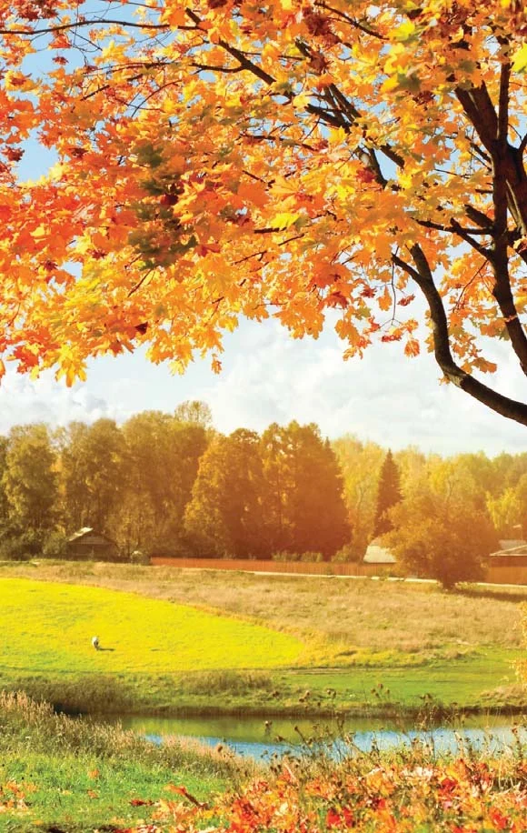
Beyazın yanında dokuz folyo rengi. Her renk, atölyede folyo koduyla izlenir. Bir numuneye dokunun, çerçeve değişsin.
Başka bir renk mi arıyorsunuz? Bize yazın ya da arayın.
Düz ve termoform, beyaz ve lamine. Kapı yapımcısından tabelacıya, soğuk hava deposundan konveyör şasisine kadar her sektörün aradığı kalınlıkta: 0,7 ile 1,5 mm arasında.
6.000 tonYıllık PVC plaka üretim kapasitesi
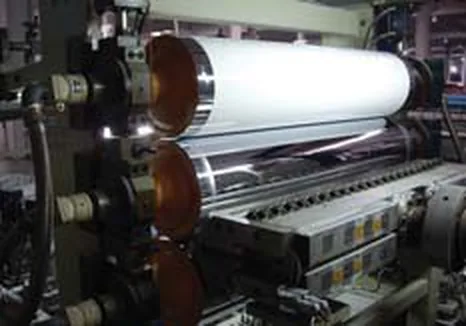
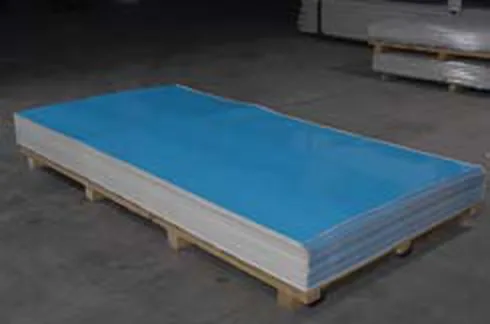
Suya, kimyasala ve UV’ye dayanıklı. Vakumla şekillenir, yanmayı sürdürmez, formaldehit ve asbest içermez.
Kapı panelleri ve dekoratif kapı göbeği.
Tavan ve duvar kaplama, ıslak hacim, WC bölmesi, soğuk hava deposu.
Tabela, yön levhası, stand.
Dış cephe kaplama, konveyör ve şasi üstü.
Katalog ve teklif için yazın.
İki PVC plakanın arasında özel köpük çekirdek; koruyucu filmle teslim edilir.
Dekoratif kapı göbeği de üretiyoruz; modeller katalogda.
Katalog / teklif isteyin: WhatsApp, ckizilay@eurolinepvc.com
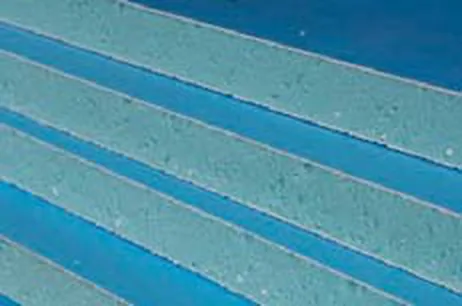
Kesitte köpük çekirdek.Organize Sanayi Bölgesi'ndeki tesisimizde hammaddeyi otomatik hazırlama ve dozajlama ünitesiyle karıştırıyor, profili sekiz hatta çekiyor, kapı ve pencereyi aynı çatı altında birleştiriyoruz.
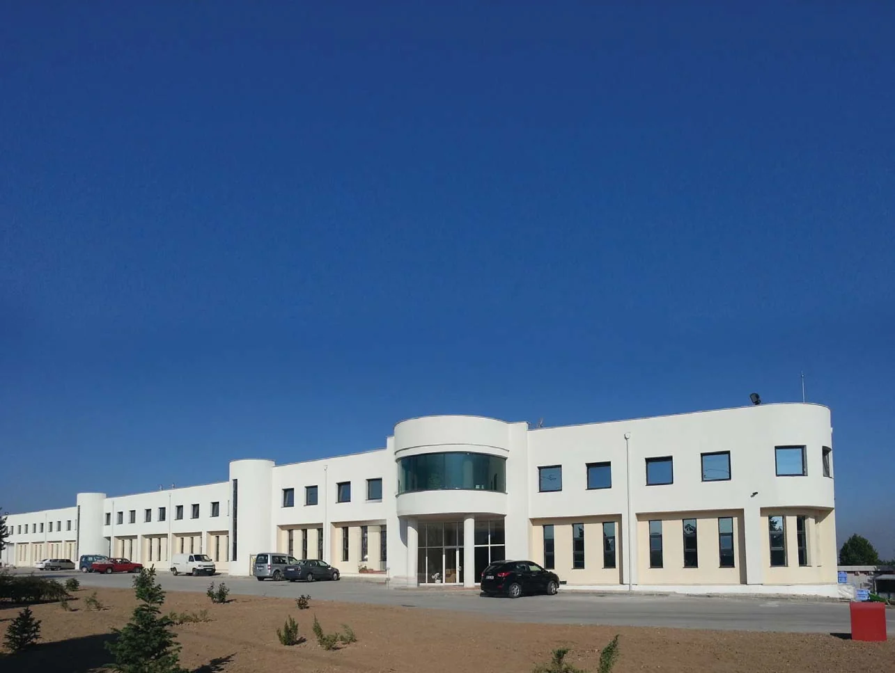
YAŞAM BOYU KALİTE
Teknik kataloğu indirin, projenize uygun seriyi birlikte seçelim.
Organize Sanayi Bölgesi 15. Cadde, Eskişehir +90 222 236 0 111 WhatsApp +90 555 709 94 08 ckizilay@eurolinepvc.com Ürün kataloğu (PDF, 2,7 MB)